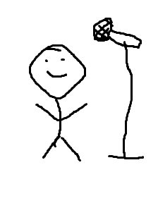
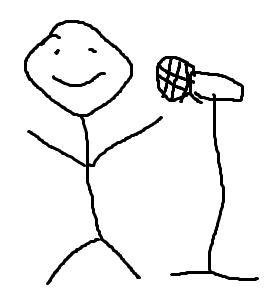

Stand-up comedy is a very popular part of the entertainment business. Two comedians in this category are Gabriel Iglesias and Kevin Hart. Both comedians are very popular and have had very successful careers so far. These two comedians also have a somewhat similar kind of comedy. This is a sentence.
Kevin's comedic style is very self-deprecating, and he does not care about making fun of himself on stage. Most notably are the jokes about his height. He laughs at himself and doesn't bring others down. Kevin's style of comedy has helped him achieve great things, especially all of the movies that he has starred in.
Gabriel's comedic style is also of the self-deprecating type. Like Kevin, Gabriel makes jokes about a part of his physical appearance. In Gabriel's case, it is jokes about his weight. Gabriel's comedy career has been very successful for him and has allowed him the opportunity to star in shows and movies as well as continue his comedy career.
